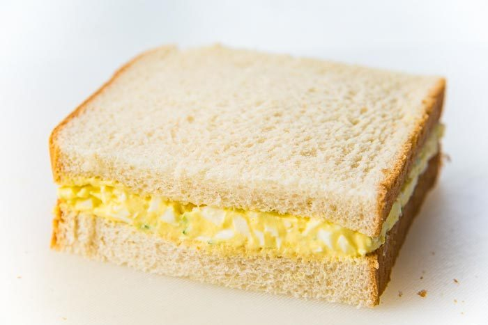

MicroEggs

Description
Simple and easy to make egg sandwich right from the microwave in 2 minutes!
Ingredients
- 2-3 Eggs
- 2 slices of bread (Wonder Bread for optimal results)
- Cheese slice (American ONLY! - 2 if you are not a rookie)
- Salt
- Rapid Egg Cooker (Dollar store gem)
- Small container with lid (Just big enough to contain final sandwich)
- Microwave
Steps
- Whip out your Rapid Egg cooker and crack your eggs into it
- Scrampble up dem eggs with a fork or whatever you have available
- Add a pinch of salt (Dont forget were using salty cheese, so dont go crazy. Especially if you not a rookie)
- Nuke it for 1 minute
- Stir the egs one good time, add 1 slice of cheese on top.
- Nuke for another 30 seconds. Eggs should still be a bit loose.
- Prep your containter with one slice of bread and one slice of cheese, if you aren't a rookie
- Slide the eggs from the Rapid Egg cooker cheese side up laying on top of the bread and cheese in the container.
- Place other bread slice on top and close the lid to your container for 30 secs or more.
- Pop that puppy out and devour!